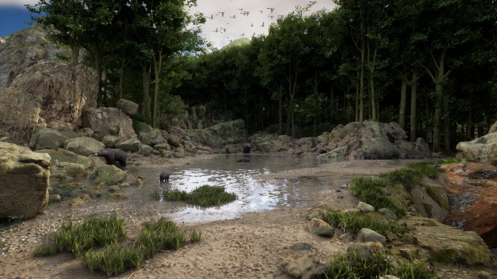

Environment & asset art
Modeling, UVs, texturing, materials, landscapes, foliage, lighting and scene composition.

CITHAN S / SENIOR 3D ARTIST
3D Generalist · Environment Artist
Real-time worlds. Immersive experiences.
01 / SELECTED WORK
A closer look at what I create.Select a project to explore its images and videos.
02 / THE ARTIST
Art meets technical thinking.I’m Cithan, a Senior 3D Artist with 4+ years of creative industry experience.
My background includes 3+ years creating real-time environments, assets and immersive XR/VR experiences, alongside 1.5 years in 2D graphic design and video editing. I work across modeling, UVs, texturing, materials, lighting and rendering, bringing scenes from asset creation to headset delivery.
At Medisim VR, I built forest, hospital and laboratory environments in Unreal Engine and Unity. My responsibilities grew to include coordinating a small cross-functional team, preparing project plans, and reviewing scenes for final creative and technical quality.
Modeling, UVs, texturing, materials, landscapes, foliage, lighting and scene composition.
Unreal Engine and Unity environments for medical VR training, 360° content, and AR/MR experiences. Hands-on with Unity URP and HDRP.
Resolved cross-engine asset hierarchy issues with USD and improved headset render clarity by moving 360° output from 4K to 8K.
MY TOOLKIT
Asset workflows / FBX · OBJ · GLB / glTF · USD · Alembic
Scene workflows / Unreal Movie Render Queue · Sequencer · Basic Blueprints · Unity URP & HDRP
AI-assisted pre-visualization / Veo · Gemini · ElevenLabs · Kling AI
03 / EXPERIENCE
Craft, collaboration, progression.Medisim VR
Created and reviewed immersive 3D content and coordinated a team of 3–5 across 3D art, UI/UX, animation and development. Prepared project scope and timelines, reviewed final scene quality, and used AI tools for pre-visualization and training animation.
Medisim VR
Built forest, hospital and laboratory environments for VR training. Modeled and textured assets with Blender and Substance Painter, prepared real-time materials and lighting, and rendered 360° scenes for headset playback.
Femtosoft
Produced graphics for web and print, edited and color-corrected photos, and created marketing and product-promotion videos. Helped streamline the team’s photo and video editing workflow.
B.Sc. Animation & VFX
Apex Institution for Multimedia, Coimbatore04 / NEXT CHAPTER
Open to 3D Generalist and
3D Environment Artist opportunities.